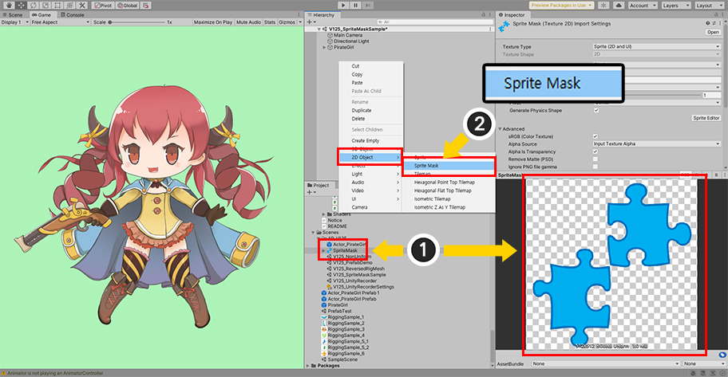
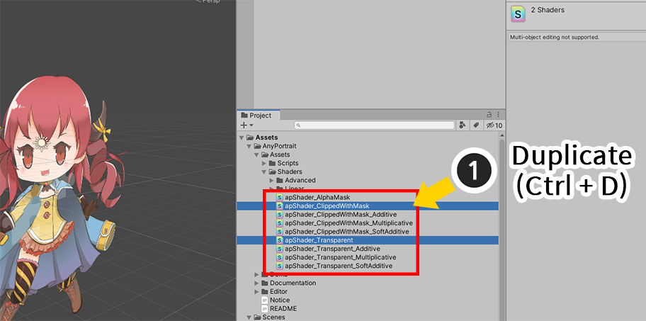
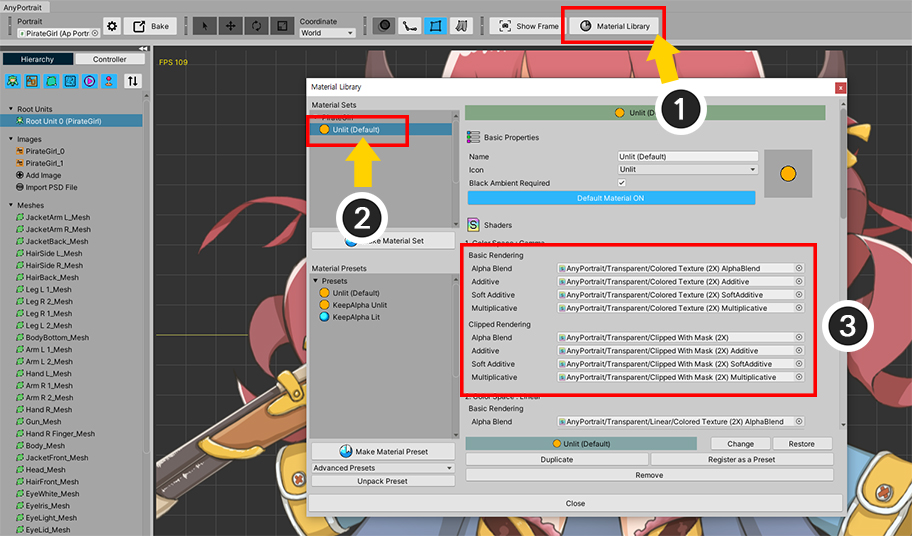
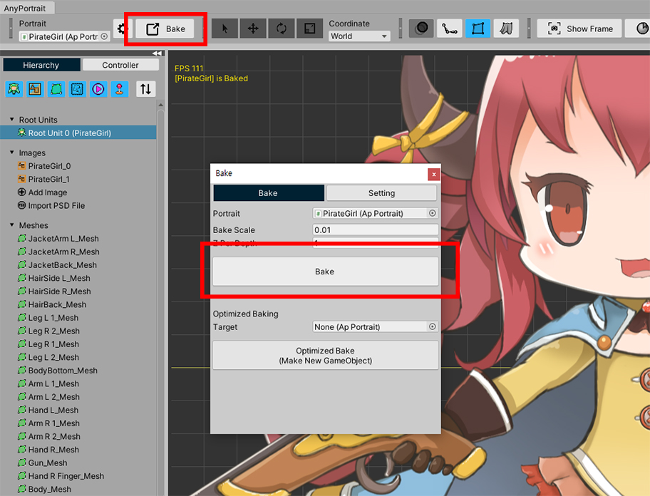
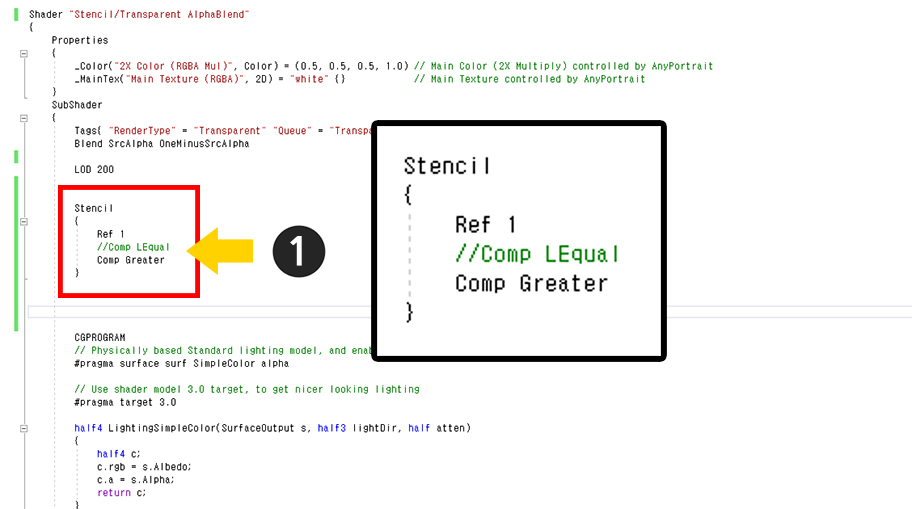
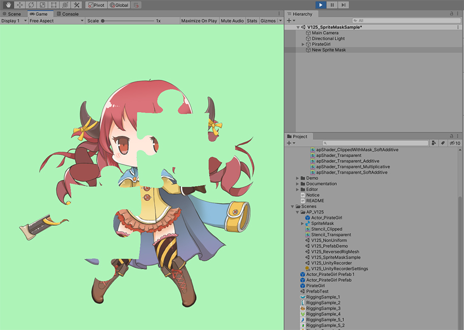
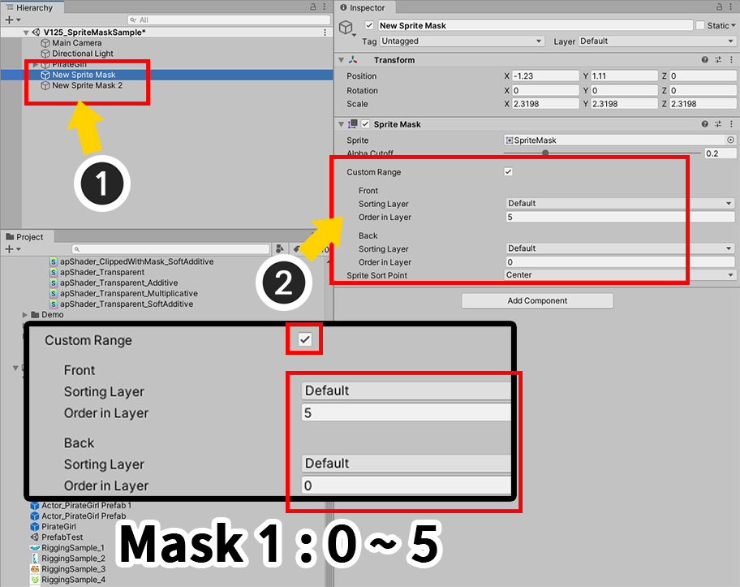
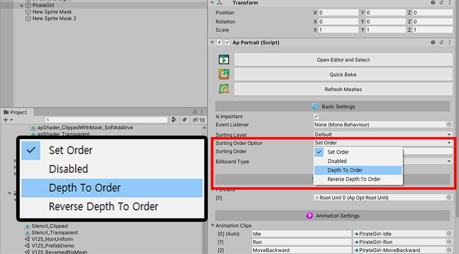
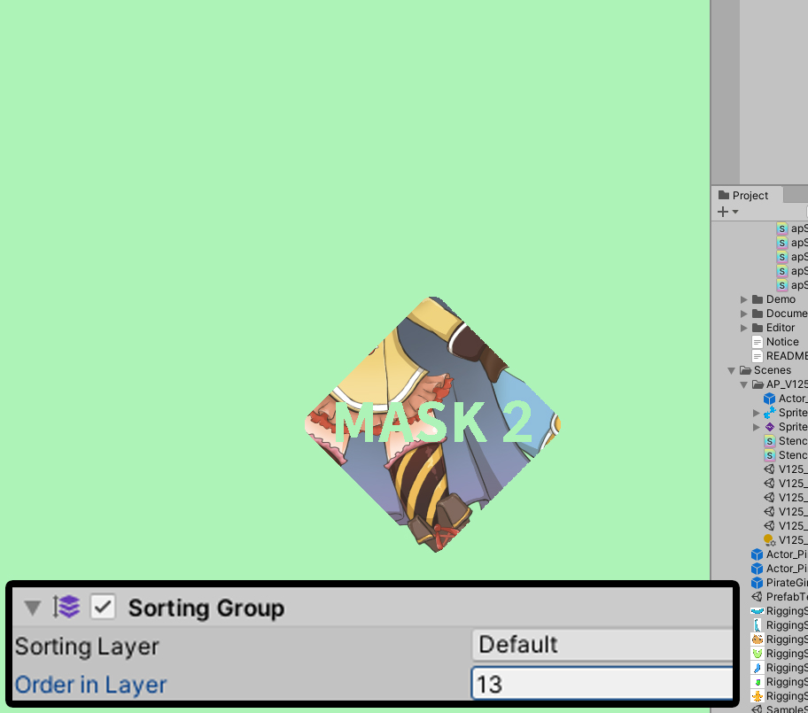

AnyPortrait > Manual > Applying Sprite Mask
Applying Sprite Mask
1.2.5
Unity's "Sprite Mask" allows you to render while hiding a part of another Sprite Renderer.
- Sprite Mask (Unity Official Manual)
Characters created in AnyPortrait are composed of Mesh Renderers instead of Sprite Renderer, so they are not affected by sprite masks by default.
However, you can simply write shaders and make the character be rendered through a sprite mask.
We recommend that you read the following tutorials as well.
- Material Library
- Shader for meshes
- Custom Shader

Let's create a Sprite Mask.
(1) Prepare an image to be used as a sprite mask and set it to the Sprite type.
(2) Right-click on the Hierarchy and select Sprite Mask.

(1) A new sprite mask has been created.
(2) Apply the prepared image to the sprite mask.
By default, sprite masks are not visible in the Scene View.
(3) Make the Sprite Mask included among the information displayed in the scene view.
(4) The sprite mask now appears in the scene view.

Let's write new shaders.
AnyPortrait's 1 Material Set includes several shaders, but here we will only modify the two shaders that are most used.
(There are a total of 9 shaders included in one Color Space in one Material Set, so all 9 shader files need to be modified to get it right.)
(1) In the Assets > AnyPortrait > Assets > Shaders folder where the basic shader is located, duplicate the following two shader assets.
- apShader_Transparent : Default shader with alpha blending (gamma color space)
- apShader_ClippedWithMask : Default shader with alpha blending applied to the clipped mesh (gamma color space)

(2) I changed the names of the duplicated shader assets as follows.
- apShader_Transparent > Stencil_Transparent
- apShader_ClippedWithMask > Stencil_Clipped

First, let's open the Stencil_Transparent shader asset.
(Check the related page for how to write a custom shader.)
(1) Change Shader Name. Set a name that is easy to identify.
(2) Add Stencil Code.
Stencil
{
Ref 1
Comp LEqual
}
Since the sprite mask uses Stencil, masking is possible even if it is not a Sprite Renderer.

Edit the Stencil_Clipped shader asset in the same way.
Change the name and add the Stencil code.

Let's apply the created shader assets to the character.
(1) Open the AnyPortrait editor and click the Material Library button to open the "Material Library".
(2) If you select the currently applied Material Set,
(3) You can see the shaders used in this material set.

Let's replace it with the modified Stencil shader asset.
First, replace the shader of (1) "Color Space: Gamma > Basic Rendering > Alpha Blend" with (2) "Stencil_Transparent".

Replace the clipping shader in the same way.
Replace the shader of (1) "Color Space: Gamma > Clipped Rendering > Alpha Blend" with (2) "Stencil_Clipped".

Close the material library and run Bake.

When viewed in a Unity scene, only the sprite mask may be visible and the character may not be visible.
Let's run the game.

When you run the game, you can see that the character is rendered only as much as the image of the sprite mask.
Rendering except sprite mask area
Conversely, this step, let's make the sprite mask area hidden and only the rest of the area visible.

Open the "Stencil_Transparent" and "Stencil_Clipped" assets we created earlier and edit the code.
Change Stencil's comparison operator to "Comp Greater", the opposite of "Comp LEqual".

If you run the game again, you can see that the rest of the sprite mask is rendered, contrary to the previous result.
Using the Custom Range of the sprite mask
By using the property of "Custom Range" of the sprite mask, only targets with the specified Sorting Layer or Sorting Order can be made to be applied.

For testing, I created a new sprite mask.
You can see the two sprite masks are applied.

(1) Select First Sprite Mask.
(2) After checking "Custom Range", set "Order in Layer" of Front to 5 and Order in Layer of Back to 0. .

(3) Select Second Sprite Mask.
(4) After checking "Custom Range", set "Order in Layer" of Front to 15 and Order in Layer of Back to 10. .

Let's use Sorting Group to control Sorting Order of characters created with AnyPortrait.
(1) Select a character created with AnyPortrait or a parent GameObject.
(2) Click the "Add Component" button and add Sorting Group.

Change Sorting Order Option to "Depth To Order".
Now you can use the Sorting Group to set which sprite mask will be applied.

If the value of Order in Layer of Sorting Group is set to 3, only the first mask is affected.

If the value of Order in Layer of Sorting Group is set to 13, only the second mask is affected.
Note.
You can perform this operation in the same way even when the Sorting Order Option of AnyPortrait is set to "Set Order" mode without using Sorting Group.